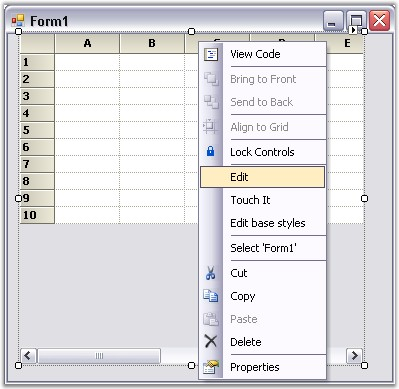
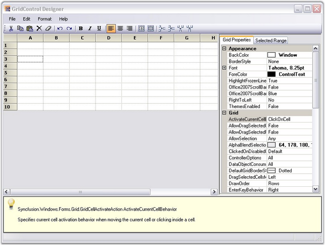
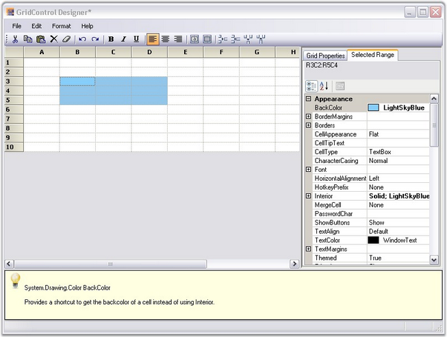

This section elaborates upon Grid control's edit designer. Grid control has an excellent user friendly design-time support. A Grid control's edit designer is added to the grid to ease the process of designing a Grid control on a cell level. Using the editor, the Grid can be modified, saved and loaded to XML formatted files or to SOAP formatted templates.
Following is the step-by-step procedure to edit Grid control's cell styles using GridControl Designer window:
1. Right click the Grid control. A context menu is displayed.
2. Select Edit from the context menu drop-down. The figure below illustrates this user-action:

Figure 150: Grid control with the Context Menu
 Note:
Note:
1. The Editor opens up on the right hand side of the page and the Grid Properties tab is highlighted by default.
2. The cell content/styles and general grid properties can be modified under the Grid Properties tab.

Figure 151: Grid Properties
The figure above shows the GridControl Designer window with Grid Properties tab.
Modifying the Properties of a Selected Range
To modify the properties of a selected range, follow the steps listed below:
1. Select a range of cells.
2. Click Selected Range tab to view the Property grid for the selection.

Figure 152: Grid control Designer
The figure above shows the Property grid under the Selected Range tab in the GridControl Designer window.
3. 3. Make the required modifications in the property grid so that they are affected in the selected range of the main grid.
4. 4. Exit editor after the modifications are done.
Note: The system prompts you to save the changes
to the Grid control in the designer, if exited without saving.